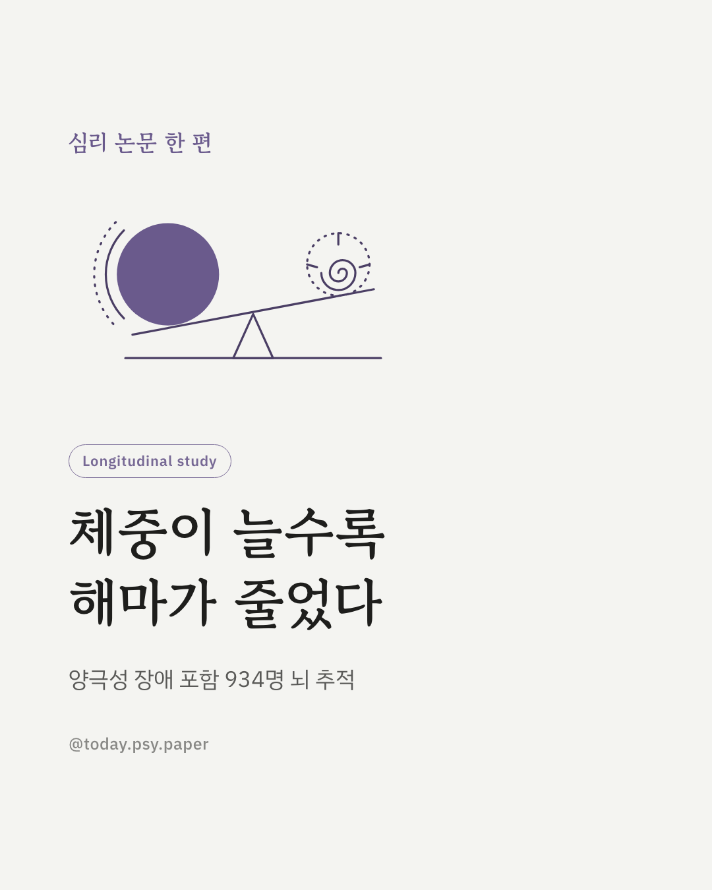
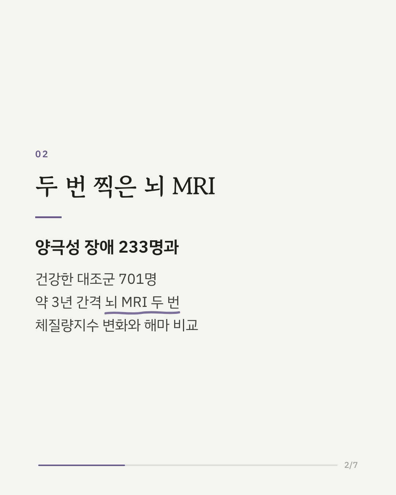
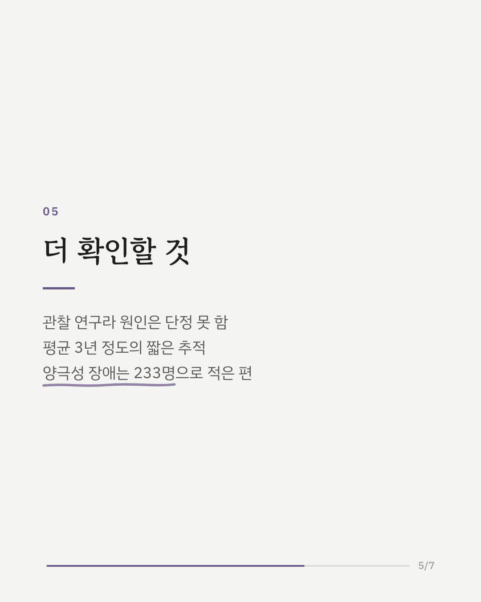
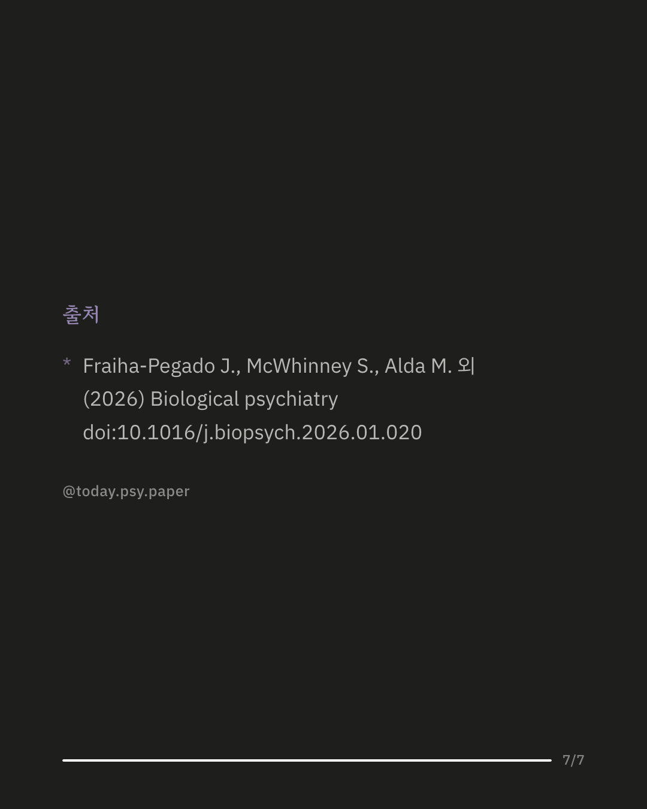

양극성 장애가 있는 사람에게 비만은 흔한 편입니다. 비만은 기억을 맡는 뇌 부위인 해마가 작은 것과 관련이 있다고 알려져 있었지만, 체중이 늘 때 해마가 시간에 따라 어떻게 변하는지는 분명하지 않았습니다. 국제 공동 연구 그룹 ENIGMA는 양극성 장애 233명과 건강한 대조군 701명의 뇌를 평균 약 3년 간격으로 두 번 MRI로 촬영했습니다. 그 결과 체중이 많이 늘어난 사람일수록 해마 부피가 더 줄었고, 이 관련은 양극성 장애에서 더 뚜렷했습니다. 처음 체중이 낮았던 사람이 오히려 체중이 더 많이 늘어 해마 감소도 컸습니다. 반대로 처음의 뇌 구조는 이후 체중 변화를 예측하지 않았고, 다른 뇌 부위에서는 이런 관련이 보이지 않았습니다. 연구팀은 체중 증가가 조절할 수 있는 위험 요인일 수 있다고 봅니다. 다만 관찰 연구여서 체중 증가가 해마 감소의 원인이라고 단정할 수는 없고, 추적 기간도 평균 3년 정도로 짧은 편이었습니다. Biological Psychiatry (2026), 'The Link Between Weight Gain and Hippocampal Atrophy in Bipolar Disorder: A Longitudinal Investigation in 934 Participants' DOI: 10.1016/j.biopsych.2026.01.020 #임상심리 #정신건강정보 #심리학연구 #논문리뷰 #양극성장애 #조울증 #해마 #뇌건강
python3 publish.py 41720385